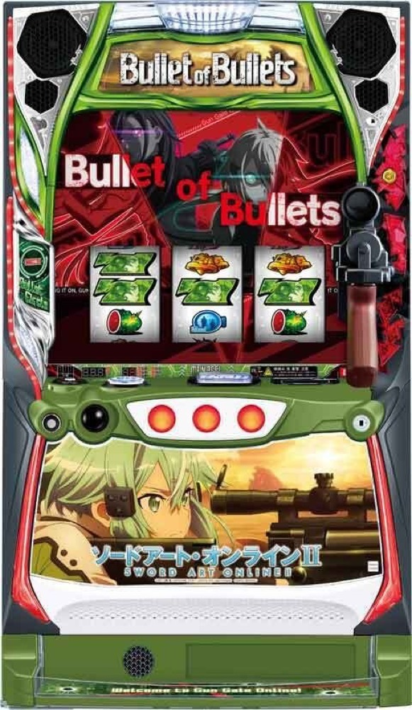

スロット ソードアート・オンラインⅡ
スナイパーチャンス最大3勝から、デス・ガンバトルとFULL DIVEへ。
- 導入
- 2026年6月
- メーカー
- パオン・ディーピー
- 分類
- パチスロ
主要スペック
約55%のスコードロンバトルから純増約3.6枚/G・初期150枚＋αのBullet of Bulletsへ。20G周期のスナイパーチャンス、5Gのラストアタック、4G＋最終1Gのデス・ガンバトル、純増約7.2枚/GのFULL DIVEまでを実機順に体験できます。
- スコードロンバトル成功期待度約55%
- BoBは初期150枚＋α・SC最大3勝
- デス・ガンバトル約50%・上位純増約7.2枚/G
スロット ソードアート・オンラインⅡの見どころと計算条件
約55%のスコードロンバトルから純増約3.6枚/G・初期150枚＋αのBullet of Bulletsへ。20G周期のスナイパーチャンス、5Gのラストアタック、4G＋最終1Gのデス・ガンバトル、純増約7.2枚/GのFULL DIVEまでを実機順に体験できます。
スマスロ SAOⅡを数字で早分かり
20G周期のスナイパーチャンスで最大3勝を目指し、ラストアタック、デス・ガンバトル、FULL DIVEまでを個別に記録します。
30秒で分かるスマスロ SAOⅡ
初期150枚＋αのBoBでスナイパーチャンス最大3勝を重ね、約50%のデス・ガンバトルから純増約7.2枚/GのFULL DIVEを狙う台です。
こんな遊び方に向いている
- 20G周期のスナイパーチャンスをPUSHで見たい
- ラストアタック5Gの引き戻しを体験したい
- デス・ガンバトルからFULL DIVEを狙いたい
遊ぶ前に確認したいこと
- 設定別CZ・AT確率と主要ゲーム数は公開値
- SC相手別勝率など非公表部分は代表値
- BoB予選・準決勝という旧簡易フローは廃止
スコードロンバトルからBoBへ
通常時は液晶ゲーム数、バレットカウンター、強チェリーなどからCZを目指します。CZスコードロンバトルの成功期待度は約55%で、成功するとBullet of Bulletsへ進みます。
設定別CZ・AT初当りは公開値を使用。通常時の内部モードと全小役抽選は初当り確率へまとめています。
150枚＋αとスナイパーチャンス
BoBは純増約3.6枚/G・初期150枚＋αの差枚数AT。液晶20Gごとにスナイパーチャンスを抽選し、AT1回につき最大3勝を目指します。
対戦相手はダイン、ペイルライダー、闇風、銃士X、デス・ガン。デス・ガン勝利時は上位CZの権利を獲得します。相手別の詳細勝率が非公表の部分は強弱関係を保つ代表値です。
ラストアタックとデス・ガンバトル
差枚を使い切ると5Gのラストアタックへ進み、成功期待度約35%でスナイパーチャンスへ復帰します。スナイパーチャンス3勝、またはデス・ガン撃破でデス・ガンバトルの権利を獲得します。
デス・ガンバトルは4Gのバトル＋最終1GのPUSHで決着し、成功期待度は約50%。突破すると上位ATへ進みます。
FULL DIVE・絶剣・アルティマ状態
FULL DIVEは純増約7.2枚/G。上乗せは3桁以上となり、終了後は再びデス・ガンバトルへ進みます。サイトでは上位区間と継続ジャッジを交互に表示します。
上位突入の一部は1G完結の絶剣へ進み、初期2200枚＋αを獲得。アルティマ状態中はデス・ガンバトルの勝利期待度を高めた代表値で判定します。
固定条件と簡略化する範囲
- 約31G/50枚・1,000円46枚貸し・5.2枚交換で固定
- 設定別CZ・AT確率、CZ約55%、ラストアタック約35%、デス・ガンバトル約50%は公開値
- SC相手別勝率、直乗せ、絶剣振り分け、アルティマ状態の詳細は体験用代表値
- 19,000枚到達時はコンプリート表示
平均Gと投資目安の計算
掲載するバレット・オブ・バレッツ初当り約1/386.2は設定1基準です。当サイトでは50枚あたり31G、1,000円46枚貸しの固定条件から、設定1基準の平均投資目安を約13,500円と計算します。
シミュレーターでは設定1〜6を均等抽選します。設定1〜6で公開されている初当り値を個別に使います。公開されていない特化ゾーン・上位到達率の設定差は加えません。 換金は5.2枚交換で固定し、結果とランキングに設定を表示します。
シミュレーション結果の見方
当るまでスコードロンバトル・バレット・オブ・バレッツまでのゲーム数
設定設定1・2・3・4・5・6から抽選された今回の設定
上位到達デス・ガンバトルとFULL DIVEへの到達
最終収支差枚と5.2枚交換の収支目安
結果は自動で「マイ記録」に保存され、同じ機種を何回試したか、最高収支、勝率をあとから確認できます。
簡易シミュレーターについて
スコードロンバトル・バレット・オブ・バレッツ・FULL DIVEの流れを固定条件で体験できます。JavaScriptを有効にすると、この位置にシミュレーター、演出、マイ記録、機種別ランキングが表示されます。
結果は娯楽・確率理解のための参考表示です。金銭的価値や交換価値はなく、実際の勝敗や収支を保証しません。18歳未満の方の利用はお控えください。
スマスロ SAOⅡのよくある質問
スマスロ SAOⅡはどんな台？
約55%のスコードロンバトルから純増約3.6枚/G・初期150枚＋αのBullet of Bulletsへ。 スコードロンバトル成功期待度約55%が主な確認ポイントです。
スマスロ SAOⅡの平均投資目安は？
設定1基準のバレット・オブ・バレッツ初当り約1/386.2と、50枚あたり31G・46枚貸しの固定条件から、平均13,500円を目安として表示します。実際の設定や遊技状況で結果は変わります。
設定とゲームの流れはどう抽選する？
開始時に設定1・2・3・4・5・6から1つを均等抽選し、スコードロンバトル、バレット・オブ・バレッツ、デス・ガンバトル、FULL DIVEの順で到達を判定します。設定は最終結果とランキングに表示します。
収支はどう計算する？
1,000円46枚貸し・5.2枚交換の固定条件で投資、換金、収支目安を計算します。実店舗の再プレイ、持ちメダル、端数処理は含みません。